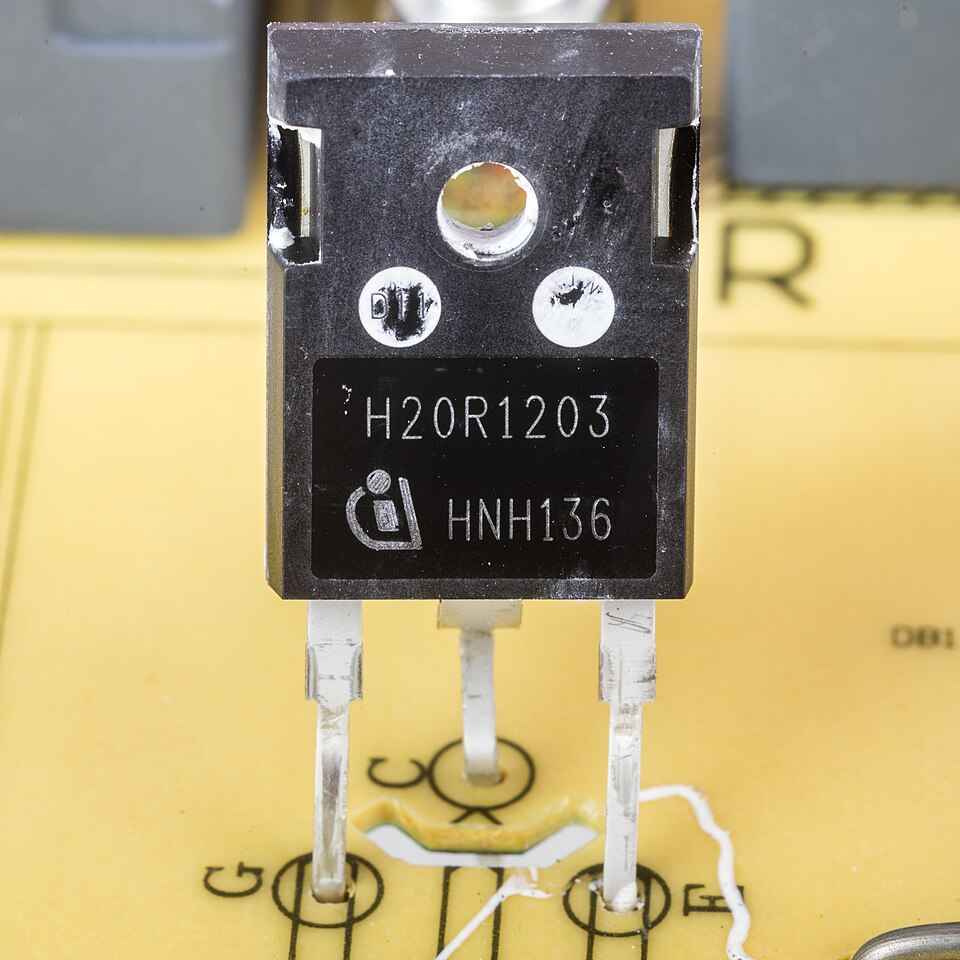
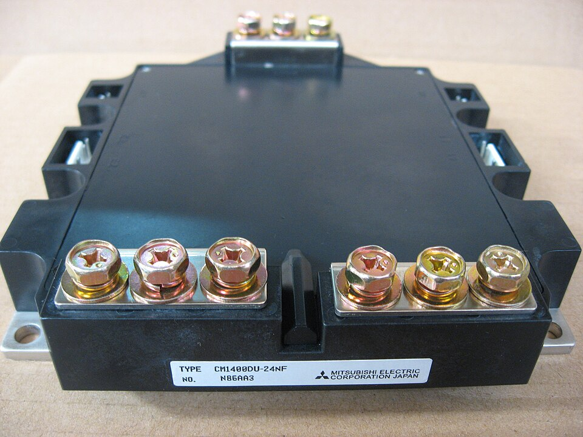
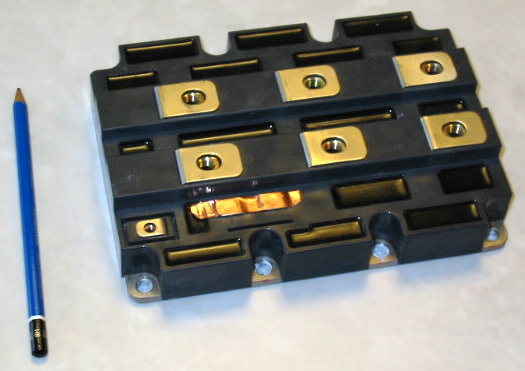
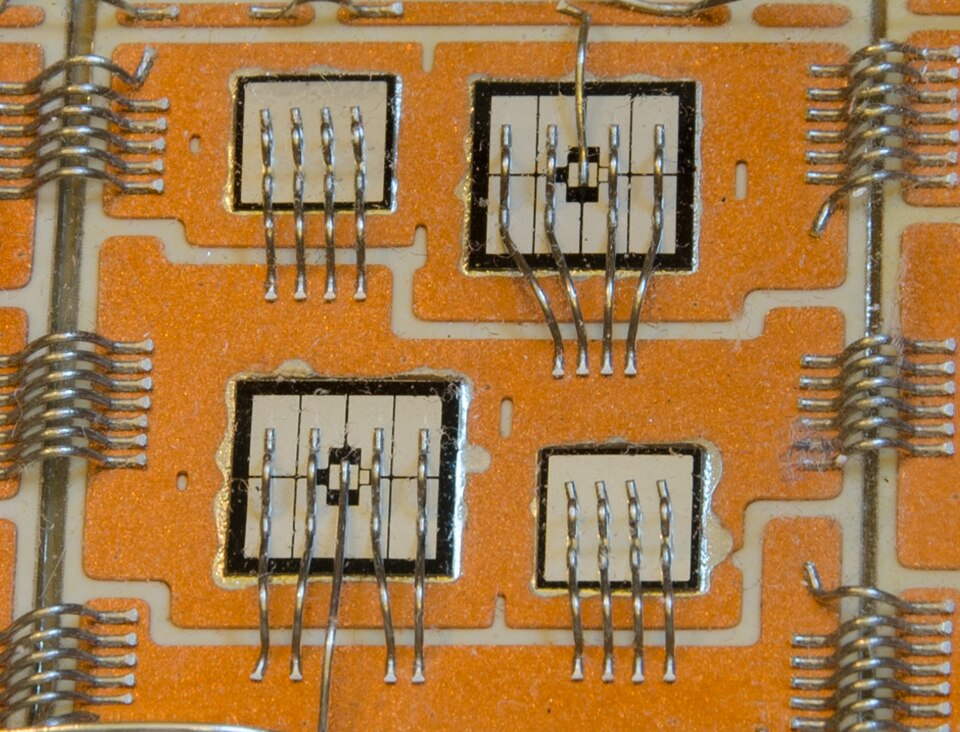

Textbooks and Resources
Textbooks
- Wu & Narimani, High-Power Converters and AC Drives, Ch. 8–9
- Holmes & Lipo, Pulse Width Modulation for Power Converters
- Mohan, Undeland, Robbins, Power Electronics, Ch. 8
- Baliga, Fundamentals of Power Semiconductor Devices
Survey papers
- Rodríguez, Lai, Peng, IEEE TIE, 2002
- Rodríguez et al., Proc. IEEE, 2009
- Kouro et al., IEEE TIE, 2010
Online
- imperix TN132: NPC converter
- imperix: NPC inverter models
- imperix: SPWM vs SVPWM
Products
- ABB ACS1000 (3L NPC), ACS2000 (5L-ANPC)
- Infineon hybrid Si/SiC ANPC, 1500 V PV
Basics: the leg and its voltages
More levels: smaller steps, lower device voltage
Real switches: every device has one voltage rating

1200 V, 20 A · cookers, PV

1200 V, 1400 A · drives, wind

3300 V, 1200 A · trains, MV drives

IGBT chips (gate wire) + diode chips
A higher voltage rating costs resistance
2-level on 1500 V: 3.3 kV parts. 3-level: 1.2 kV. Why better?
More voltage, thicker drift layer:
and the layer is a resistor:
Two 600 V dies: 0.71× one 1200 V die.
IGBT, diode: more charge, slower.
Lower-voltage devices switch with 10× less energy
- Smaller step: Vdc/(N − 1)
- Faster device class
But: two IGBTs in series = two on-state drops, so more conduction loss.
Also: dv/dt, cosmic rays, SiC and GaN.
Three ways to make an extra level
Connect the output to the midpoint O
NPC · T-type · ANPC
A charged capacitor in series
Flying capacitor
Midpoint and capacitor
5-level ANPC
NPC: clamp diodes add a 0 V level
Which device pays the switching loss?
NPC in equations: the midpoint current
Pairs S3 = 1 − S1, S4 = 1 − S2:
| state | S1 | S4 | iO |
|---|---|---|---|
| P | 1 | 0 | 0 |
| O | 0 | 0 | ia |
| N | 0 | 1 | 0 |
T-type and ANPC: two fixes to the NPC
How much current does each NPC device carry?
Positive half-cycle, unity PF: S1 conducts in P, D5 in O, S2 in both.
= the red area, averaged over 360°
Who works hardest? It depends on the power factor
Flying capacitor: a charged capacitor makes 0 V
Flying capacitor: keeping Vfc in place
Average over Ts:
Equal duties: no drift. A small difference corrects Vfc.
5-level ANPC: a selector plus a flying-capacitor cell
Design: one leg for a 1500 V DC link
- Levels. Block ≤ ⅔ of rating: 2L needs 3.3 kV, 3L 1.2 kV
- Clamp. T-type outer sees 1500 V ✗ → 3L ANPC
- Or 5L-ANPC: 1.2 kV + 650 V devices, Vfc = 375 V
- Cfc ≈ 270 µF (100 A, 10 kHz, 19 V), pre-charged
- Balancing: check in simulation (next talk)
Cfc sizing
Choosing a topology
| Leg | Switches | Device blocks | Devices on | Capacitor to hold | Typical home |
|---|---|---|---|---|---|
| 2-level | 2 | Vdc | 1 | — | ≤ 1 kV |
| NPC | 4 | Vdc/2 | 2 | midpoint | MV drives, PV |
| T-type | 4 | Vdc outer | 1 | midpoint | ≤ 1 kV: UPS, PV |
| ANPC | 6 | Vdc/2 | 2 | midpoint | 1500 V PV, SiC |
| Flying cap. | 4 | Vdc/2 | 2 | Vfc | DC–DC, GaN |
| 5L-ANPC | 8 | Vdc/2, Vdc/4 | 3 | both | MV drives |
References
- B. Wu, M. Narimani, High-Power Converters and AC Drives, 2nd ed., Wiley-IEEE Press, 2017.
- D. G. Holmes, T. A. Lipo, Pulse Width Modulation for Power Converters, Wiley-IEEE Press, 2003.
- N. Mohan, T. M. Undeland, W. P. Robbins, Power Electronics: Converters, Applications, and Design, 3rd ed., Wiley, 2003.
- A. Nabae, I. Takahashi, H. Akagi, “A new neutral-point-clamped PWM inverter,” IEEE TIA, 17(5), 1981.
- T. A. Meynard, H. Foch, “Multi-level conversion: high voltage choppers and voltage-source inverters,” IEEE PESC, 1992.
- J.-S. Lai, F. Z. Peng, “Multilevel converters — a new breed of power converters,” IEEE TIA, 32(3), 1996.
- T. Brückner, S. Bernet, H. Güldner, “The active NPC converter and its loss-balancing control,” IEEE TIE, 52(3), 2005.
- P. Barbosa et al., “Active neutral-point-clamped multilevel converters,” IEEE PESC, 2005.
- M. Schweizer, J. W. Kolar, “Design and implementation of a highly efficient three-level T-type converter for low-voltage applications,” IEEE TPEL, 28(2), 2013.
- B. J. Baliga, Fundamentals of Power Semiconductor Devices, Springer, 2008.
- J. Rodríguez, J.-S. Lai, F. Z. Peng, “Multilevel inverters: a survey of topologies, controls, and applications,” IEEE TIE, 49(4), 2002.
- J. Rodríguez et al., “Multilevel converters: an enabling technology for high-power applications,” Proc. IEEE, 97(11), 2009.
- S. Kouro et al., “Recent advances and industrial applications of multilevel converters,” IEEE TIE, 57(8), 2010.
- ABB, ACS1000 and ACS2000 medium-voltage drive documentation; ABB Review, 2011.
- Infineon, hybrid ANPC EasyPACK 2B F3L11MR12W2M1_B65 for 1500 V PV, press release, 2019.
- Device photos (slide 5): Wikimedia Commons, CC BY-SA 3.0/4.0; authors credited on the slide.
- imperix application notes: TN132 (NPC converter), NPC inverter for three-phase applications.
Learning objectives
After this talk you should be able to:
- Explain why multilevel legs are used: device physics (Ron,sp ∝ VB2.5), switching energy, and output quality.
- Use pole, phase and line-to-line voltages, and compute the harmonics of a staircase from its switching angles.
- Trace the current path in NPC, T-type and ANPC legs for every state and both current signs, and identify which device hard-switches.
- Derive the average and RMS device currents and the losses of an NPC leg.
- Write switching functions and averaged models of NPC and flying-capacitor legs: ⟨iO⟩ = (1 − |r|) ia, ⟨ifc⟩ = (d1 − d2) ia.
- Select the number of levels, the topology and the flying capacitor for a given DC link.
The switch is the bottleneck
A semiconductor is rated for one blocking voltage. Applications keep raising the DC link.
- Higher-voltage devices conduct worse and switch slower. The next two slides show why, from the physics and from the losses.
- Every switching edge of a 2-level leg is a full Vdc step: dv/dt, EMI, motor insulation stress.
Starting point: the two-level leg
One complementary pair, S2 = 1 − S1:
- Two levels: ±Vdc/2 = ±400 V on an 800 V link.
- The off switch blocks the full Vdc; every edge is an 800 V step.
- The current sign decides whether a switch or its antiparallel diode conducts.
Staircase synthesis: choosing the switching angles
Quarter-wave symmetric staircase: s = (N − 1)/2 steps of height E = Vdc/(N − 1) at angles α1 < … < αs. Only odd harmonics remain:
3 levels, one angle: Vh = (4/hπ)(Vdc/2) cos hα. With α = 30°, cos 90° = 0: no 3rd harmonic, THD = 31.1 % — the shape of a 2-level line-to-line voltage. α = 18° removes the 5th instead.
5 levels, two angles: one equation sets the fundamental, one removes the 5th:
m = 0.8 → α1 = 30.65°, α2 = 66.65° (36° = 180°/5 apart).
Flying capacitor in practice
Start-up: pre-charge
Cfc must reach Vdc/2 before PWM starts. With an empty capacitor the outer switch sees the full Vdc (state 11: S1′ blocks Vdc − Vfc). A pre-charge circuit or a controlled start-up sequence is needed.
Measurement and control
Active balancing needs Vfc measured in every leg, on a floating node. Phase-shifted carriers give “natural” balancing through the load impedance at fsw, but it is slow and load-dependent.
Size vs. switching frequency
Cfc ∝ I / (fsw ΔV): bulky at the low fsw of MV IGBTs, small at the high fsw of SiC and GaN. This is why flying-capacitor converters are popular in high-frequency DC–DC and GaN designs.
Faults
A discharged or shorted Cfc puts the full Vdc across devices rated for Vdc/2. Protection must detect Vfc leaving its band and stop switching.
Why not seven or nine levels? Component counts per leg
| Levels N | Main switches 2(N−1) | Clamp diodes (N−1)(N−2) | Flying capacitors (N−1)(N−2)/2 | DC-link capacitors N−1 |
|---|---|---|---|---|
| 3 | 4 | 2 | 1 | 2 |
| 5 | 8 | 12 | 6 | 4 |
| 7 | 12 | 30 | 15 | 6 |
| 9 | 16 | 56 | 28 | 8 |
| 5L-ANPC | 8 | 0 | 1 | 2 |
Counts assume every device and capacitor is rated for one level step Vdc/(N−1); higher-voltage clamp diodes and flying capacitors are built from series units.